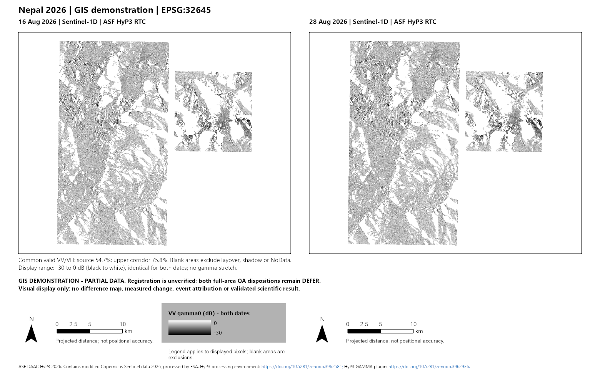

UNOFFICIAL GIS DEMONSTRATION · EPSG:32645
One place. Two dates.
Nepal · Sentinel-1D radar · 16 and 28 August 2026
Drag the divider or use this slider. Arrow keys adjust it. Zoom in and blink dates to inspect one location.
Loading two local scene renders…
The interactive view is unavailable. The static qualified panel remains available below.

What you are seeing: ASF HyP3 RTC VV gamma0, the same −30 to 0 dB grayscale on both dates. No filters, computed difference or alignment correction. M1-SRC-002 / M1-SRC-005.
Common valid VV/VH area: 54.6721% of the source-area AOI; 75.7928% of the upper corridor. VV only is displayed. Both full-area QA dispositions remain defer. Blank areas exclude layover, shadow or NoData.
Source posting is 10 m, not a statement of accuracy. Zooming enlarges an existing render; it does not add detail. Scale and coordinates describe projected distance, not validated registration. Brightness differences may reflect geometry, moisture, scattering, speckle or misalignment.
Viewer method and verification · ArcGIS deliverables and evidence limits · Leaflet license